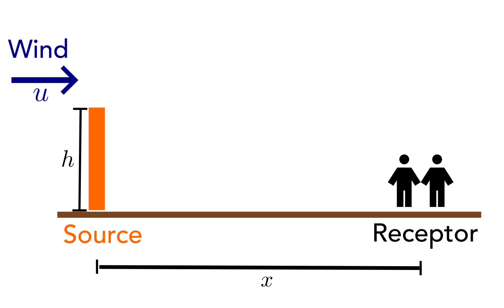
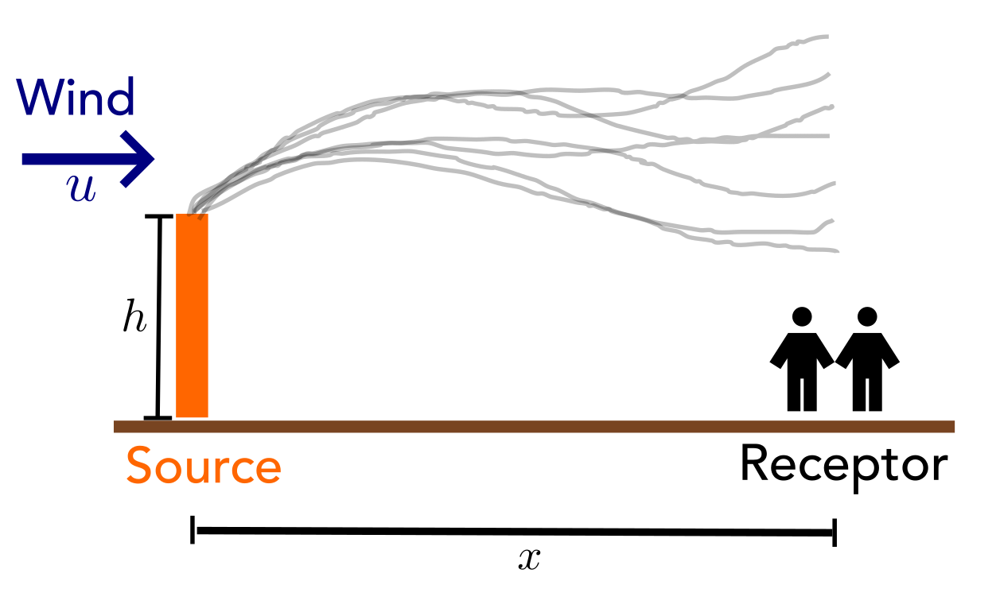
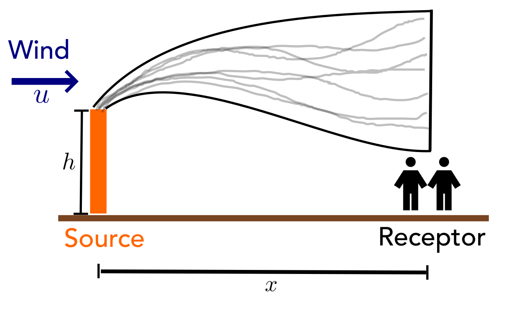
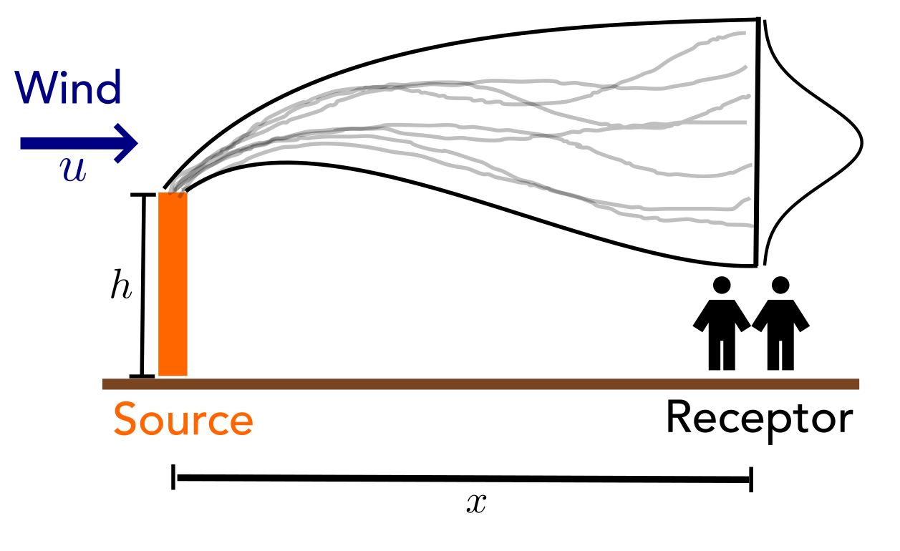
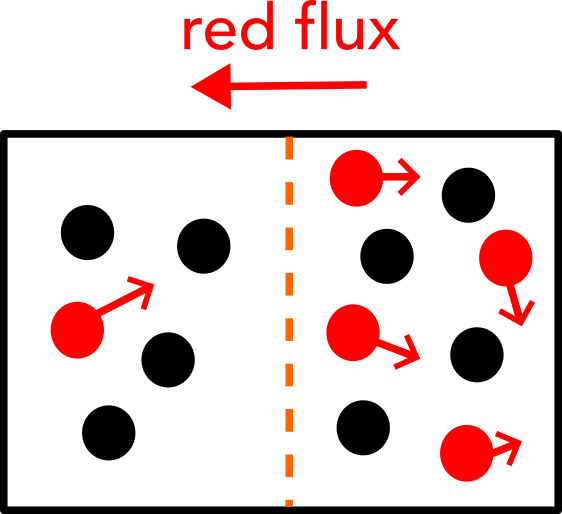
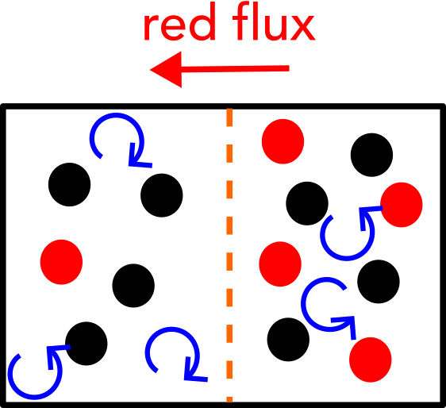
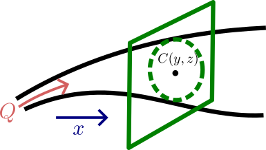
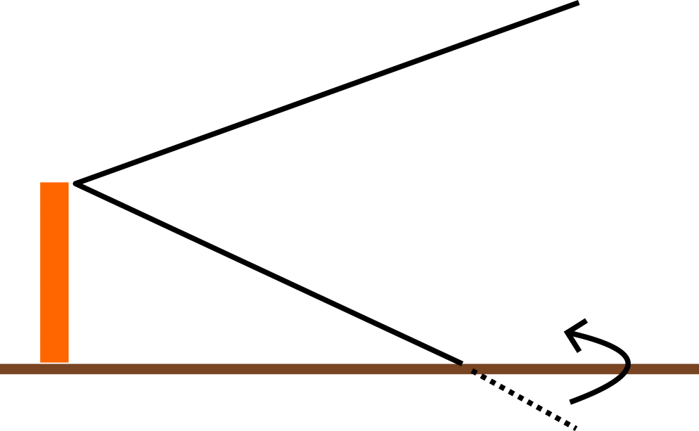
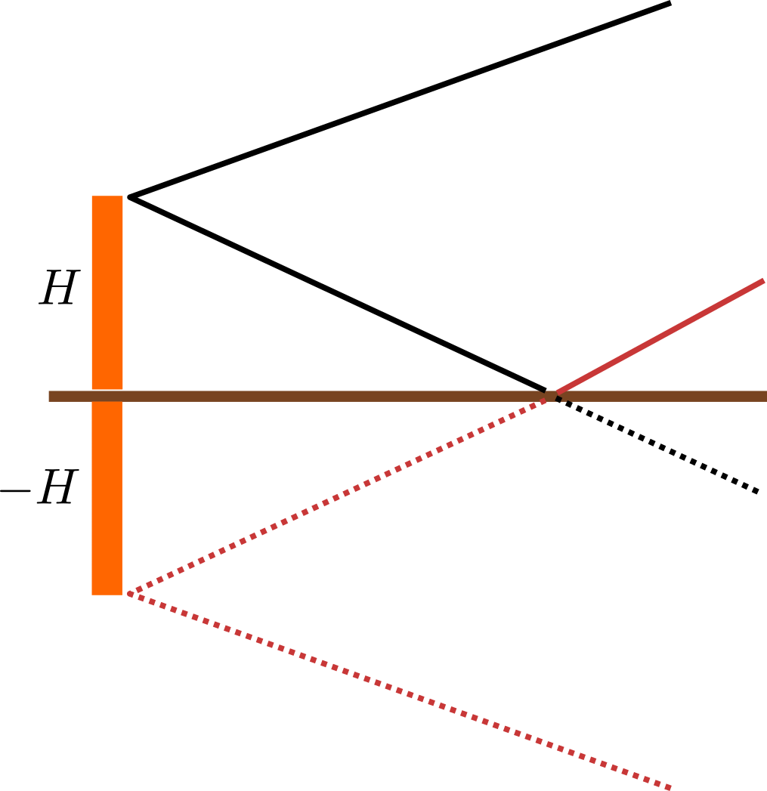
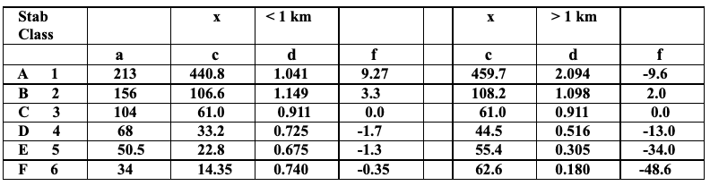

Plume Dispersion Models
Lecture 16
October 28, 2024
Prelim 1 Review
Prelim 1 Statistics
- Median: 94%
- Mean: 91%
- Standard Dev: 9%
Review and Questions
Economic Dispatch
- Second power systems LP
- Incorporating ramping and minimum power constraints can lead to a deviation from simple “merit order” dispatch.
Questions
Text: VSRIKRISH to 22333
Plume Dispersion
Criteria Air Pollutants
- Pollutants which have an ambient air quality standard.
- Most common examples:
- PM2.5, PM10
- O3
- CO
- SO2
- NO2
Impact of the Clean Air Act

Source: Resources for the Future
Some Approaches For Modeling Air Pollution
Last Class: Box (or “airshed”) model of air pollution
- Looks at overall mass-balance.
- Total inputs/outputs in a particular boundary.
Today: Point sources and receptors (plume/puff models)
Point Sources/Receptors

Emissions Follow Instantaneous Paths

Plume: Time-Averaged Positions

“Gaussian Plume”

“Gaussian Plume”

Gaussian Plume Model
\[\begin{equation} C(x,y,z) = \frac{Q}{2\pi u \sigma_y \sigma_z} \exp\left[-\frac{1}{2} \left(\frac{y^2}{\sigma_y^2} + \frac{(z - H)^2}{\sigma_z^2}\right)\right] \end{equation}\]
| Variable | Meaning |
|---|---|
| \(C\) | Concentration (g/m\(^3\)) |
| \(Q\) | Emissions Rate (g/s) |
| \(H\) | Effective Source Height (m) |
| \(u\) | Wind Speed (m/s) |
Gaussian Plume Derivation
Use the advective-diffusion equation to describe the mass-balance of a small air parcel :
\[ \frac{\partial C}{\partial t} + \color{blue}\overbrace{[D + K] \nabla^2 C}^\text{diffusion} \color{black} - \color{red}\overbrace{\overrightarrow{u} \cdot \overrightarrow{\nabla} C}^\text{advection} = 0\]
- \(D\) is the diffusion coefficient
- \(K\) is the dispersion coefficient (turbulent mixing)
Diffusive Flux

Concentration gradient + Diffusion ⇒ Flux
Fick’s law: mass transfer by diffusion
\[F_x = D \frac{dC}{dx}\]
Turbulent Flux

Concentration gradient + Turbulent mixing ⇒ Flux
\[F_x = K_{xx}\frac{dC}{dx}\]
The dispersion coefficient \(K_{xx}\) depends on flow/eddy characteristics.
Gaussian Plume Model Derivation
\[\frac{\partial C}{\partial t} + \vec{u} \cdot \vec{\nabla} C - [D + K] \nabla^2 C = 0\]
Assumptions:
- Steady-state:
\[ \frac{\partial C}{\partial t} = 0\]
Gaussian Plume Model Derivation
\[\frac{\partial C}{\partial t} + \vec{u} \cdot \vec{\nabla} C - [D + K] \nabla^2 C = 0\]
Assumptions:
- Wind only in \(x\)-direction:
\[\vec{u} \cdot \vec{\nabla} C = u_x \frac{\partial C}{\partial x} + \cancel{u_y \frac{\partial C}{\partial y}} + \cancel{u_z \frac{\partial C}{\partial z}}\]
Gaussian Plume Model Derivation
\[\frac{\partial C}{\partial t} + \vec{u} \cdot \vec{\nabla} C - [D + K] \nabla^2 C = 0\]
Assumptions:
- Turbulence \(\gg\) diffusion, e.g. \(K \gg D\), and \(K\) is unimportant along \(x\)-direction:
\[-[\cancel{D} + K] \nabla^2 C = \cancel{K_{xx}} \frac{\partial^2 C}{\partial x^2} + K_{yy} \frac{\partial^2 C}{\partial y^2} + K_{zz} \frac{\partial^2 C}{\partial z^2}\]
Gaussian Plume Model Derivation
With these assumptions, the equation simplifies to:
\[u \frac{\partial C}{\partial x} = K_{yy} \frac{\partial^2 C}{\partial y^2} + K_{zz}\frac{\partial^2 C}{\partial z^2}\]
Assume mass flow through vertical plane downwind must equal emissions rate \(Q\):
\[Q = \iint u C dy dz\]

Gaussian Plume Model Derivation
Solving this PDE:
\[C(x,y,z) = \frac{Q}{4\pi x \sqrt{K_{yy} + K_{zz}}} \exp\left[-\frac{u}{4x}\left(\frac{y^2}{K_{yy}} + \frac{(z-H)^2}{K_{zz}}\right)\right]\]
Now substitute
\[\begin{aligned} \sigma_y^2 &= 2 K_{yy} t = 2 K_{yy} \frac{x}{u} \\ \sigma_z^2 &= 2 K_{zz} \frac{x}{u} \end{aligned}\]
Gaussian Plume Model Derivation
This results in:
\[ C(x,y,z) = \frac{Q}{2\pi u \sigma_y \sigma_z} \exp\left[-\frac{1}{2}\left(\frac{y^2}{\sigma_y^2} + \frac{(z-H)^2}{\sigma_z^2}\right) \right]\]
which looks like a Gaussian distribution probability distribution if we restrict to \(y\) or \(z\).
Gaussian Plume Model with Reflection

Gaussian Plume Model with Reflection
We can account for this extra term using a flipped “image” of the source.

Final Model: Elevated Source with Reflection
\[\begin{aligned} C(x,y,z) = &\frac{Q}{2\pi u \sigma_y \sigma_z} \exp\left(\frac{-y^2}{2\sigma_y^2} \right) \times \\\\ & \quad \left[\exp\left(\frac{-(z-H)^2}{2\sigma_z^2}\right) + \exp\left(\frac{-(z+H)^2}{2\sigma_z^2}\right) \right] \end{aligned}\]
Final Model Assumptions
Assumptions:
- Steady-State
- Constant wind velocity and direction
- Wind >> dispersion in \(x\)-direction
- No reactions
- Smooth ground (avoids turbulent eddies and other reflections)
Dispersion and Atmospheric Stability
Estimating Dispersion “Spread”
Values of \(\sigma_y\) and \(\sigma_z\) matter substantially for modeling plume spread downwind. What influences them?
Estimating Dispersion “Spread”
Main contribution: atmospheric stability
Greater stability ⇒ less vertical/cross-wind dispersion.
Pasquill (1961): Six stability classes.
Estimating Dispersion “Spread”
Contributors to atmospheric stability:
- Temperature gradient
- Wind speed
- Solar radiation
- Cloud cover
- Richardson number (buoyancy / flow shear)
Atmospheric Stability Classes
| Class | Stability | Description |
|---|---|---|
| A | Extremely unstable | Sunny summer day |
| B | Moderately unstable | Sunny & warm |
| C | Slightly unstable | Partly cloudy day |
| D | Neutral | Cloudy day or night |
| E | Slightly stable | Partly cloudy night |
| F | Moderately stable | Clear night |
Estimating Dispersion “Spread”
\[\begin{aligned} \sigma_y &= ax^{0.894} \\ \sigma_z &= cx^d + f \end{aligned}\]

Note: here \(x\) is in km, while in the plume equation \(y\), \(z\) are in m!
Estimating Dispersion “Spread”
Then take estimates for \(\sigma_y\) and \(\sigma_z\) and plug into plume dispersion equation
\[\begin{aligned} C(x,y,z) = &\frac{Q}{2\pi u {\color{red}\sigma_y \sigma_z}} \exp\left(\frac{-y^2}{2{\color{red}\sigma_y^2}} \right) \times \\\\ & \quad \left[\exp\left(\frac{-(z-H)^2}{2{\color{red}\sigma_z^2}}\right) + \exp\left(\frac{-(z+H)^2}{2{\color{red}\sigma_z^2}}\right) \right] \end{aligned}\]
Gaussian Plume Example
Example
The emission rate of SO2 from a smokestack is 100 g/s. At 3km downwind on a clear fall evening (class F), what is the centerline ground-level concentration of SO2? The effective plume height is 41m and the wind speed at this height is 2.5 m/s. Under these conditions,
\[ \sigma_y = 34x^{0.894} \]
\[ \sigma_z = \begin{cases}14.35x^{0.740} - 0.35 & x < 1 \text{km} \\ 62.6x^{0.180} - 48.6 & x > 1 \text{km} \end{cases} \]
Worked Example
- Centerline, ground level concentration: \(y, z=0\)
- 3km downwind:
- \(\sigma_y \approx 91 \text{m}\)
- \(\sigma_z \approx 28 \text{m}\)
Key Takeaways
Key Takeaways
- Plume models are commonly used for point sources and point receptors.
- Gaussian plumes: continuous emissions from an elevated source.
- F&T determined by advection and diffusion/turbulence.
- However, number of critical assumptions.
Upcoming Schedule
Next Classes
Wednesday: Managing multiple point sources of air pollution
Next Week: Mixed-Integer Linear Programming and Applications